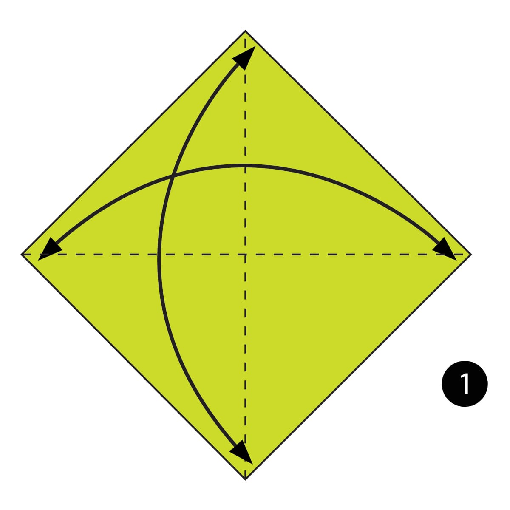
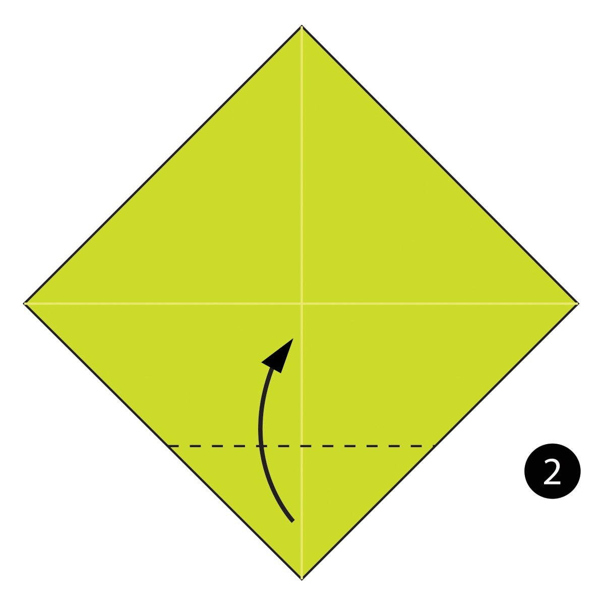
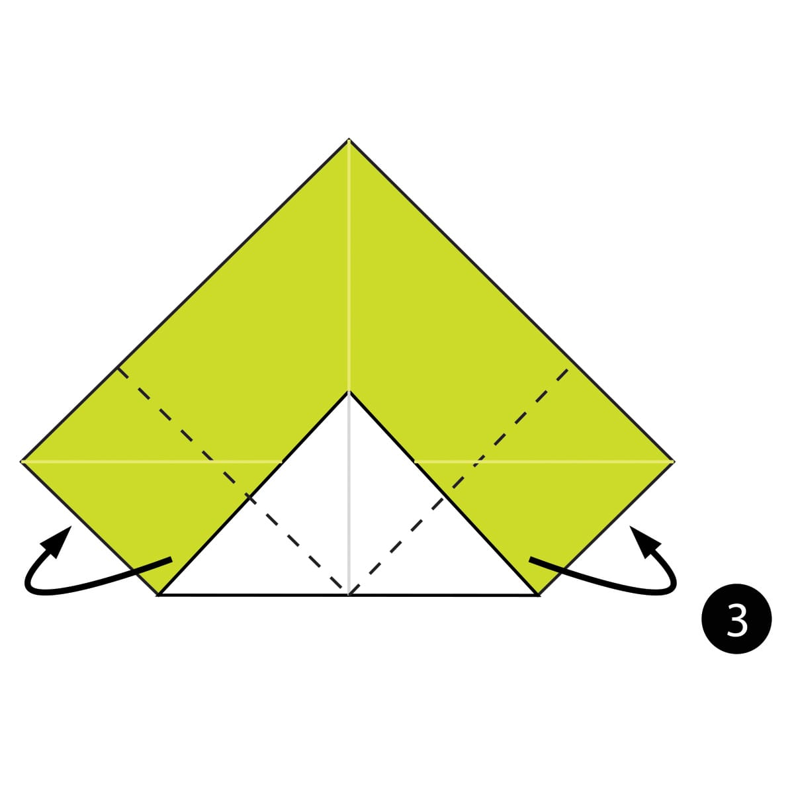
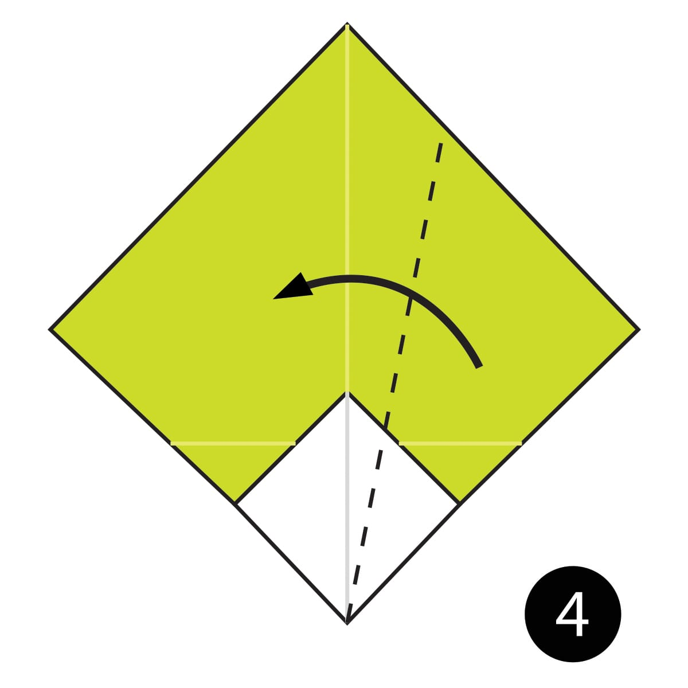
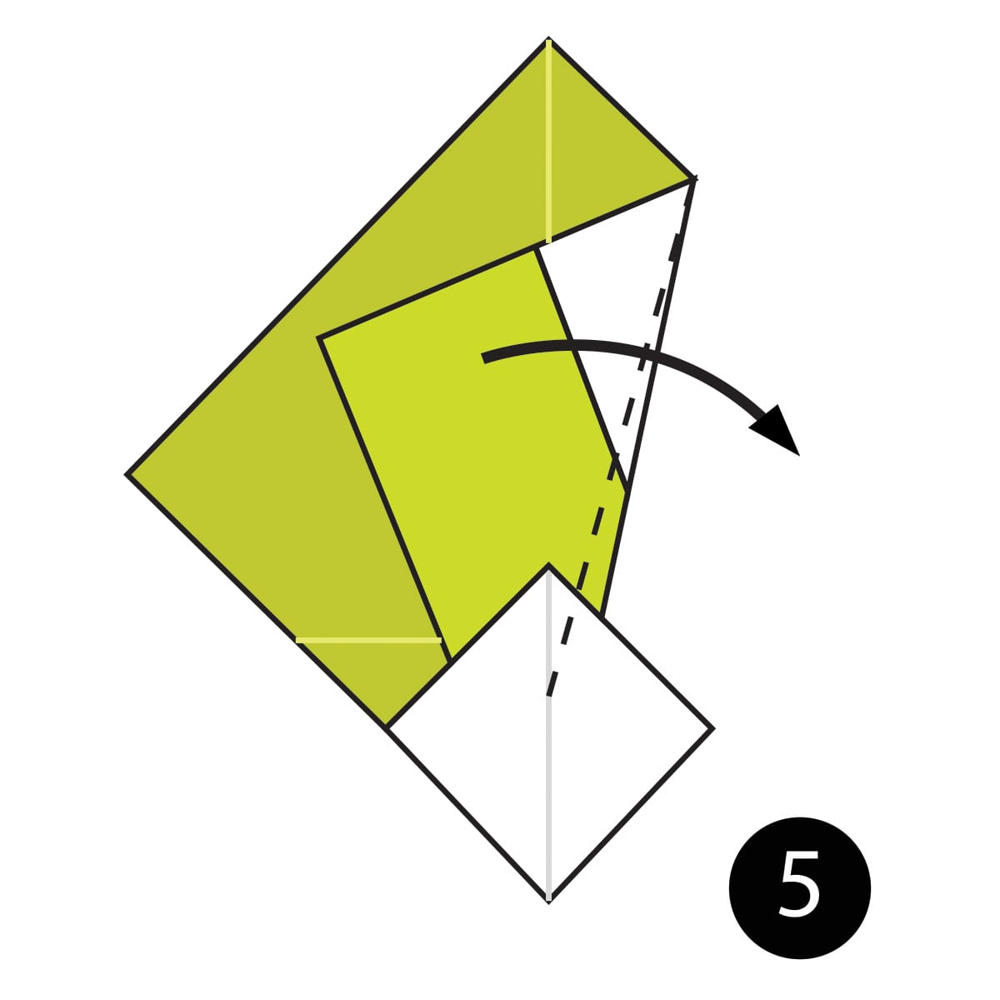
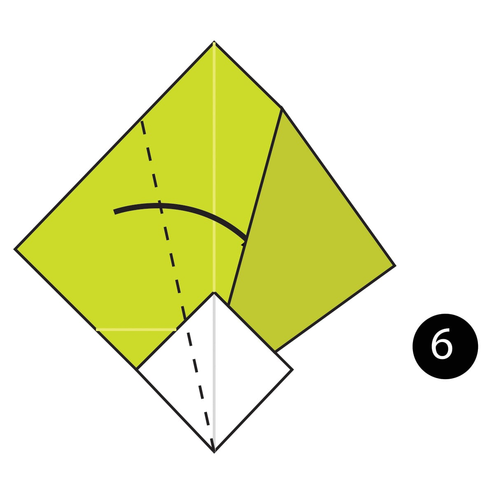
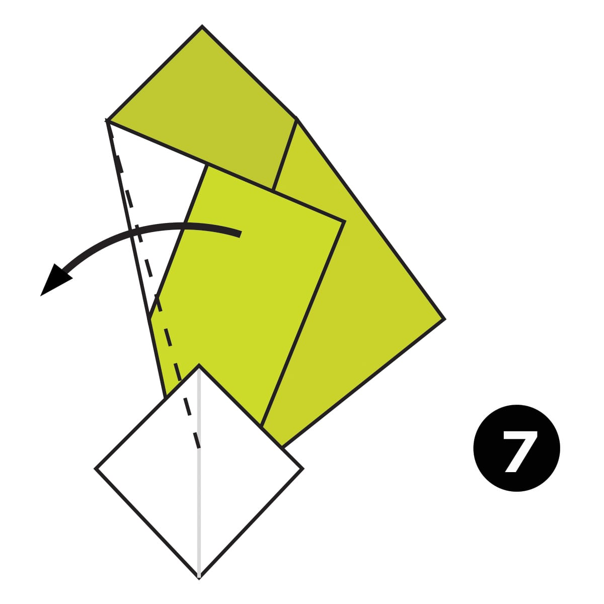
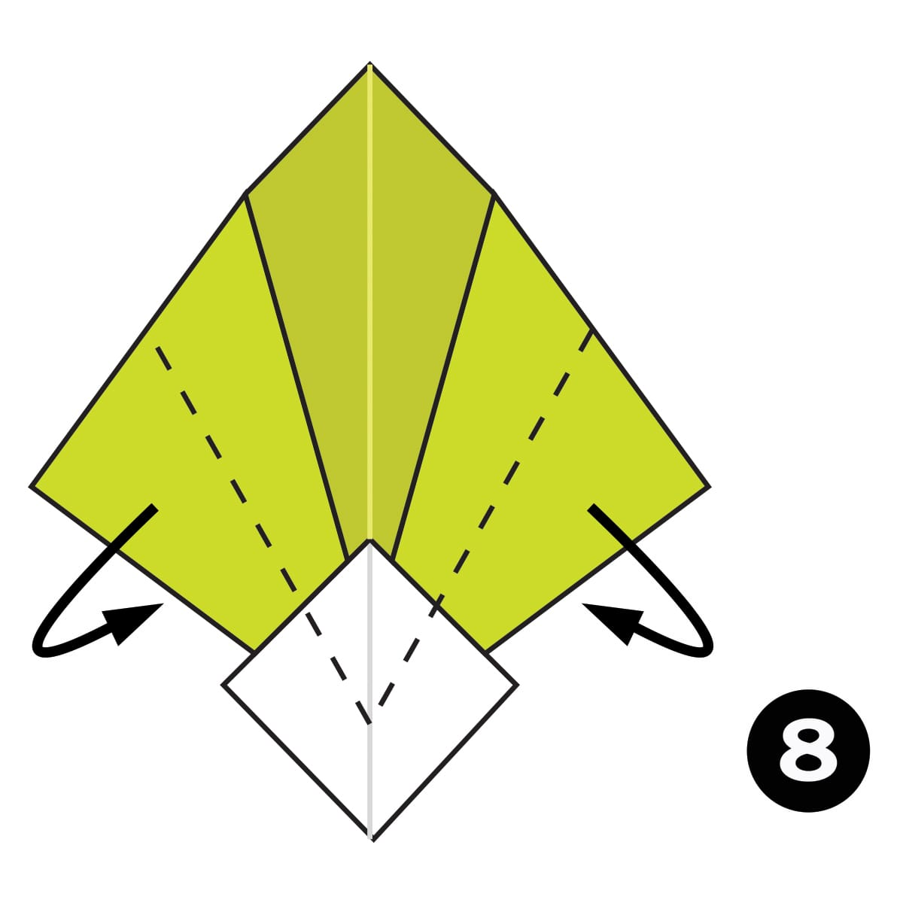
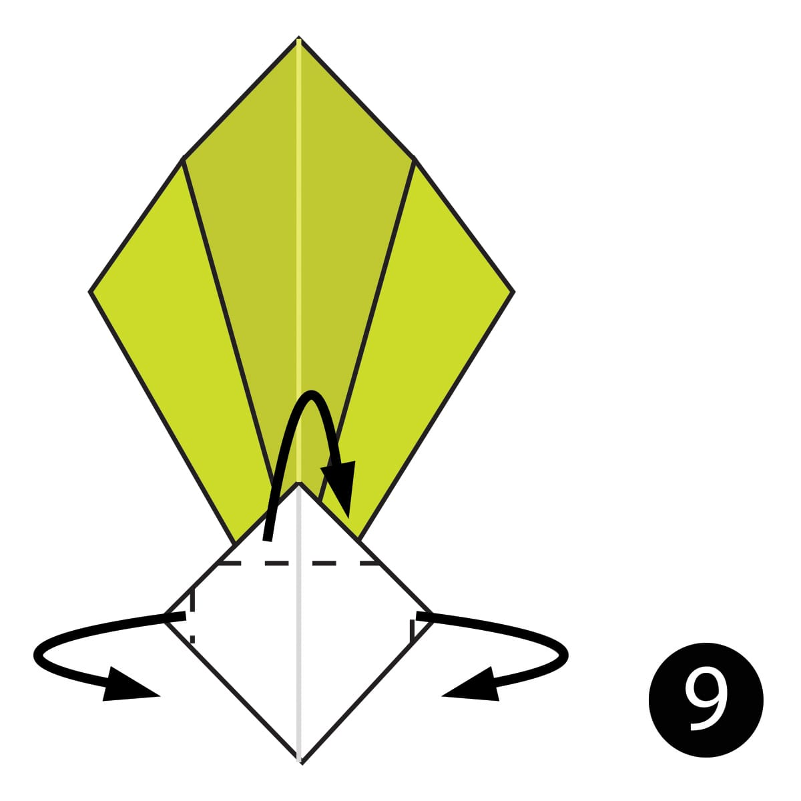
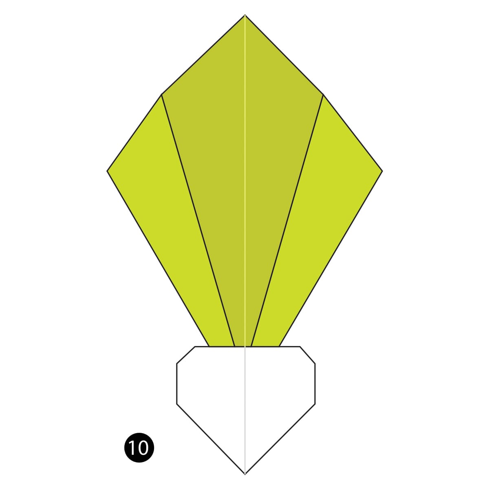

Step 1
Fold and unfold the paper in half both ways.

Step 2
Fold the paper up a little bit past the centre.

Step 3
Fold the paper behind along the dotted lines.

Step 4
Fold the paper behind the white diamond over along the dotted line.

Step 5
Fold the paper back over along the dotted line.

Step 6
Fold the paper on the left over along the dotted line.

Step 7
Fold the paper back out along the dotted line.

Step 8
Fold the paper on the sides behind along the dotted lines.

Step 9
Fold the bottom along the dotted lines to shape the turnip.

Completed
The complete turnip